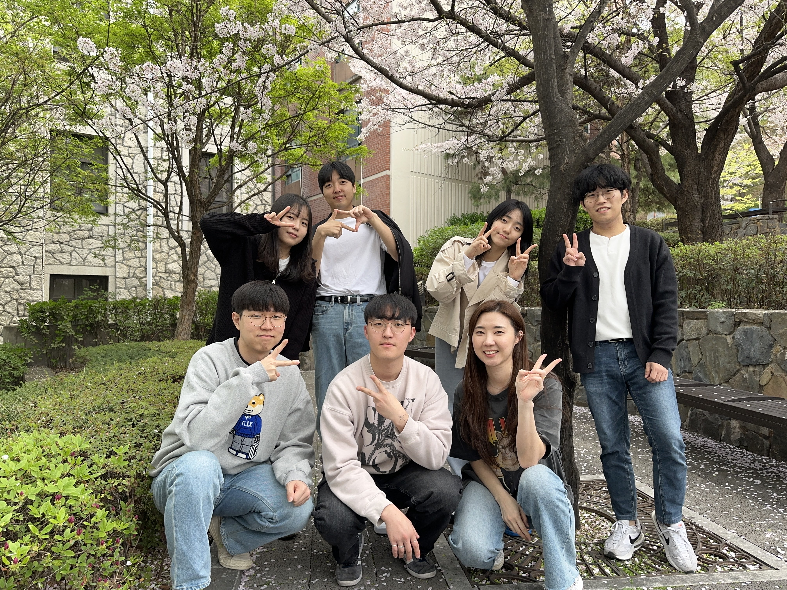
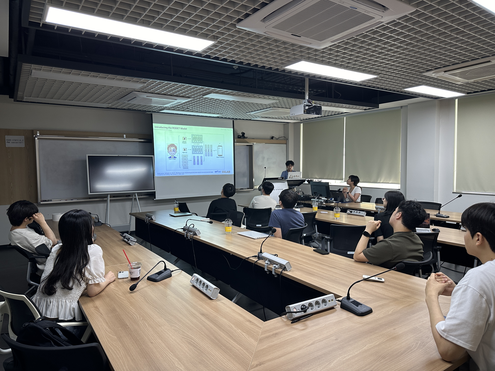
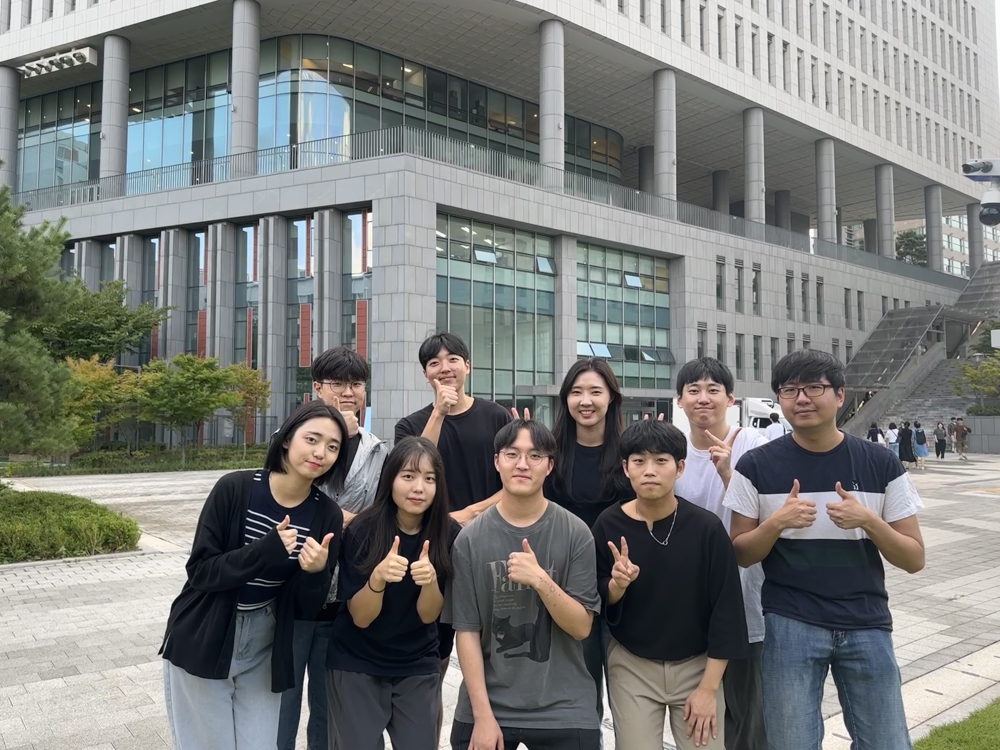
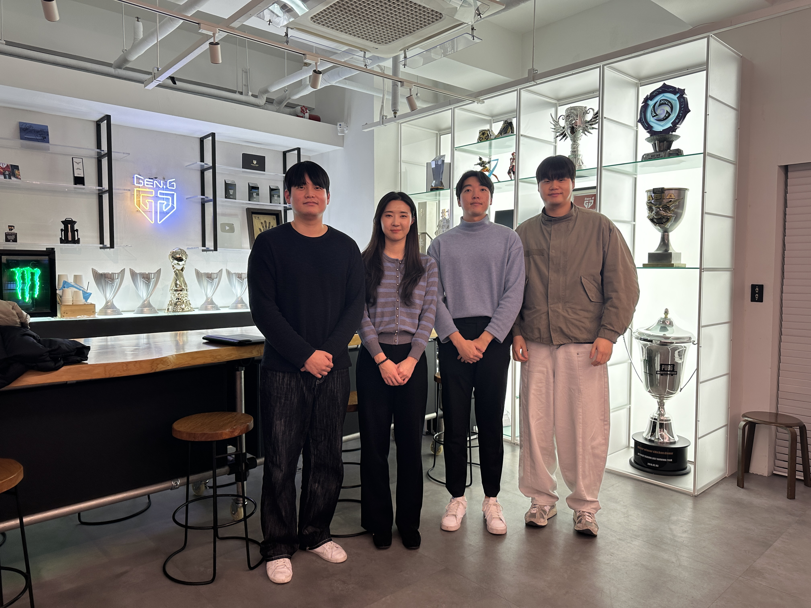

🎉 Mar 2025 IXLAB has initiated joint research with ETRI (Total budget: 4억 KRW)
🎮 Jan 2025 IX Lab visited Gen.G 🐯 💫
🎉 Jan 2025 1 paper has been conditionally accepted at CHI 2025!
🎉 Dec 2025 Dohwa has started an internship at ETRI
🎉 Nov 2024 "Minwon 99: Malicious Civil Complaint Filtering System Using LLM-Based Text Emotion Moderation" paper has been accepted at HCI Korea 2025
🙌 Nov 2024 Yongchan and Seon-gi joined IX Lab as undergraduate researcher ...
🙌 Sep 2024 Jin joined IX Lab as undergraduate researcher
🎉 Jul 2024 "Hide-and-seek: Detecting Workers' Emotional Workload in Emotional Labor Contexts Using Multimodal Sensing" paper has been accepted at IMWUT 2024!
🙌 Jun 2024 Minho joined IX Lab as undergraduate researcher
🎉 Jun 2024 Dohwa and Yejin (Jang) presented their research paper at KICS 2024
🎙️ May 2024 Eunji visited and gave a talk at ETRI
🙌 Jan 2024 Been An joined IX Lab as undergraduate researcher
🙌 Dec 2023 Yejin Jang and Yejin Choi joined IX Lab as undergraduate researcher
🙌 Nov 2023 Hyeonwoo and Dohwa joined IX Lab as undergraduate researcher
🙌 Sep 2023 Jahun joined IX Lab as an undergraduate researcher
🎮 Sep 2023 IX Lab visited T1 💫
🏫 Sep 2023 IX Lab started a new journey in Chung-Ang University




❮
❯
About IX Lab ✨
We are looking for passionate students interested in solving real-life issues from the perspective of human-computer interaction (HCI). IX Lab aims to quantitatively measure and evaluate the invisible interactions between humans and computers based on data, ultimately striving to optimize these interactions. We prioritize building and advancing each student's individual research area in the field of human-computer interaction.
IX Lab에서는 인간-컴퓨터 상호작용(HCI)의 관점에서 우리 생활과 밀접한 문제들을 정의하고 솔루션을 찾아가는 과정을 즐기는 열정적인 학생들을 모집합니다. IX Lab은 인간과 컴퓨터 사이에 눈에 보이지 않는 인터랙션을 정량적으로 측정하고 평가하여 궁극적으로는 인터랙션을 최적화하는 것을 목표로 합니다. 데이터를 기반으로 유저의 행동과 그에 따른 퍼포먼스를 예측할 수 있는 모델을 만들고, 모델을 기반으로 시스템을 효율적으로 최적화하는 연구들을 진행합니다.
연구실은 개개인의 연구 관심 분야를 존중하며 체계적인 신입생 교육 과정을 통해 학생 개인의 연구 분야를 확립해나가는 것을 중요하게 생각합니다. 다른 사람들은 지나칠 수 있는 현상들에 문제 삼기를 좋아하고, 이 문제를 해결하기 위해 논쟁을 즐기는 열정적인 학생을 기다립니다.
더불어, 연구를 경험하는 것은 매우 매력적인 일이지만 석사, 박사 진학을 결정하는 일은 쉽지 않습니다. 졸업 전이라면 학부연구생을 해보는 것을 추천하며, 학부연구생 및 석, 박사 진학 상담을 원하는 학생들은 eunjipark(at)cau.ac.kr로 메일 주세요.